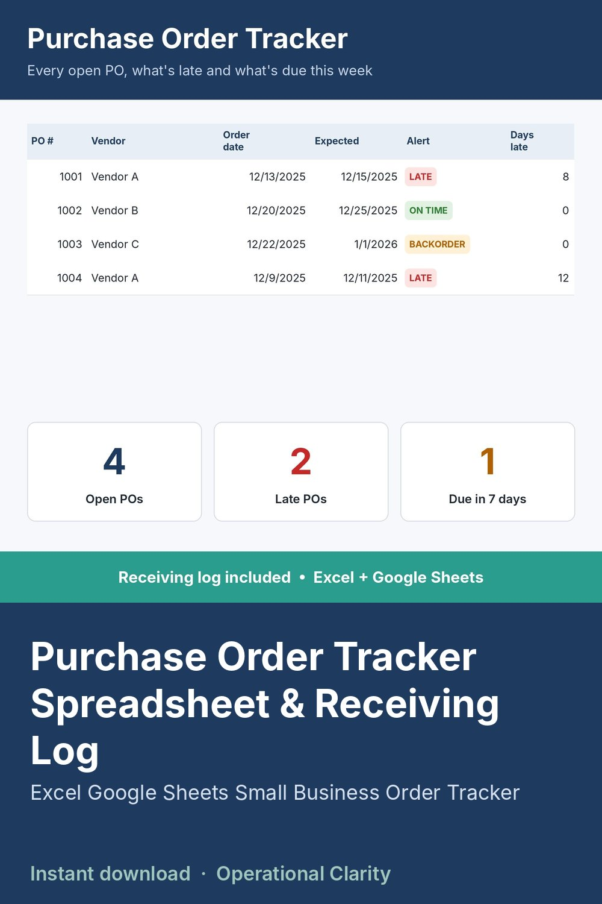

Purchase Order Tracker Spreadsheet & Receiving Log

PURCHASE ORDER TRACKER SPREADSHEET + RECEIVING LOG | Excel & Google Sheets | Instant Download
A simple order tracker for small businesses: every purchase order in one place, with late, due-soon and backordered POs flagged automatically, so you always know what's open and what still hasn't arrived.
WHAT IT DOES
• Tracks all purchase orders in one place
• Shows what's late, due soon or unresolved
• Receiving log for short shipments, damages and credits to follow up on
• Dashboard view for fast daily or weekly reviews
BEST FOR
Small teams, purchasing and operations, Etsy and online sellers who restock from suppliers, and anyone tired of "where is that PO?" emails.
WHAT YOU GET (3 files)
• Purchase Order Tracker & Receiving Log spreadsheet (.xlsx)
• Starter download + access instructions (PDF)
• Personal use license (PDF)
HOW TO USE
Open the START HERE tab, then: 1) fill in VENDORS, 2) fill in ITEMS, 3) log each PO before you send it, 4) log each delivery in RECEIVING LOG.
COMPATIBILITY
Works in Microsoft Excel. For Google Sheets, upload the file to Google Drive and open it with Google Sheets.
GOOD TO KNOW
• Personal / single-business use only. No reselling or sharing (including modified versions).
• This is a digital download. No physical item will be shipped.